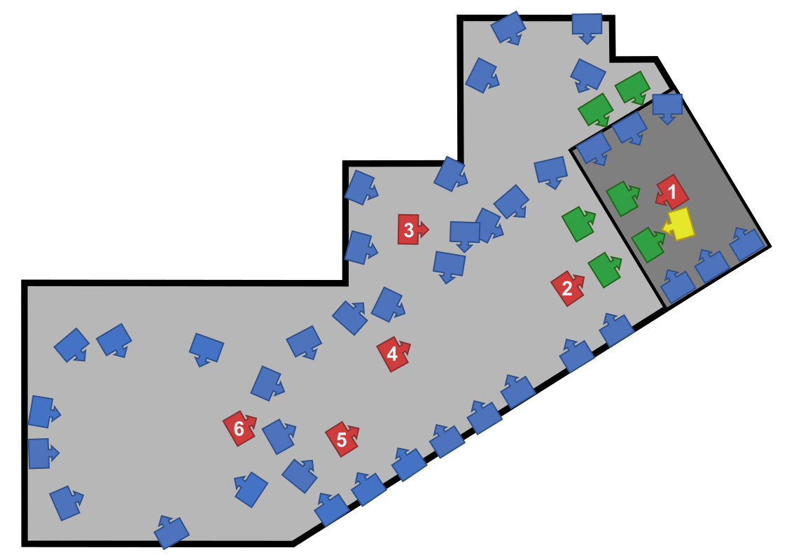

Time-Varying Feedback Delay Network in a Reverberation Enhancement System.
Audio material accompanying the publication "Reverberation Enhancement System Design and Operation: A Case Study" by G. De Bortoli, J. Heldmann, K. Prawda, S. J. Schlecht, and T. Lokki.
Reverberation enhancement systems implement active variable room acoustics.
They consist of microphones and loudspeakers distributed throughout a room and a digital signal processor (DSP).
The DSP processes the microphone signals and feeds them to the loudspeakers.
The system creates a virtual acoustic space---overlapping with the real one---that can be modified in real-time.
This installation's venue is the G Livelab in Helsinki, Finland.
A dry concert venue optimized for amplified music, it has a reverberation time of around 0.5 seconds and a strong direct sound.
The reverberation enhancement system was installed to support non-amplified performance.
This page presents audio recordings of a speech and a guitar signals played through a loudspeaker on the stage and recorded at six different positions in the audience area.

The image shows a floorplan of the venue with the positions of a stage loudspeaker (yellow), the audience microphones (red), and the system microphones (green) and loudspeakers (blue).
The recordings were taken with different acoustic conditions generated by the RES (settings 2 to 5) and they can be compared with the dry acoustics of the physical space (setting 1).
| Audience position | Setting 1 - System Off | Setting 2 - Small Room | Setting 3 - Medium Room | Setting 4 - Large Room | Setting 5 - Very Large Room |
|---|---|---|---|---|---|
| 1 | |||||
| 2 | |||||
| 3 | |||||
| 4 | |||||
| 5 | |||||
| 6 |